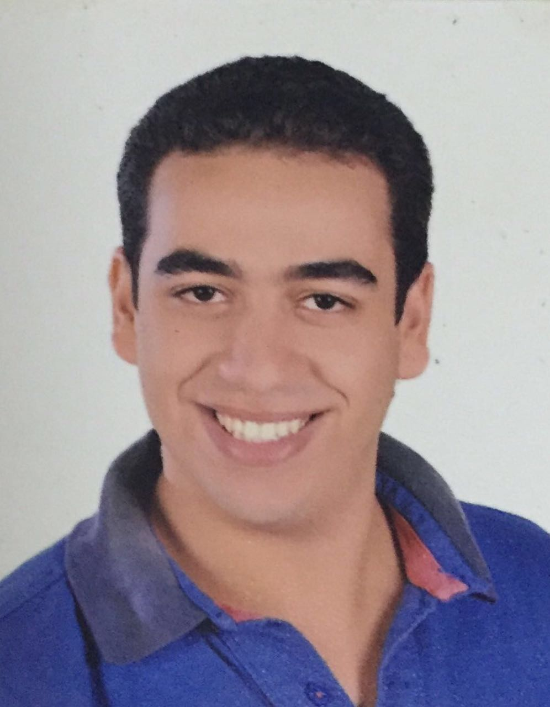

|  |
|
| Name | Hossam Hamed El-Sayed AbouAly |
| Age | 21 |
| Gender | Male |
| Religion | Muslim |
| Relationship | Single |
| Birth Date | 15 November 1994 |
| Address | Mansoura,Torel |
| Birth Address | Mansoura |
| Study | Mansoura University,Faculty of Engineering,Computer Science department |
| National ID | 29411151201295 |
| Mobile Phone | 01154358103 |
| Certificates | Intel Learn Program Teghnology And Community (TAC)
Intel Learn Program Teghnology At Work (TAW)
Scientific Research |
| Hobbies | Reading , Playing basketball |
| Socials |  |